COLONEL (Ret.) | SENIOR STRATEGIST
م. محمود مرسي
استشاري إدارة الأزمات والعمليات | خبير تحليل بيانات الأعمال
"دمج الانضباط العسكري بدقة علوم البيانات"
استشاري إدارة الأزمات والعمليات | خبير تحليل بيانات الأعمال
"دمج الانضباط العسكري بدقة علوم البيانات"
بخبرة عسكرية وهندسية تتجاوز 20 عاماً، تخصصت في إدارة العمليات المعقدة. اليوم، أوظف هذه العقلية في تحليل البيانات لاتخاذ قرارات مدروسة، مما يقلل المخاطر ويرفع كفاءة التشغيل.
إدارة الأزمات علم وتوقع. أستخدم البيانات لبناء سيناريوهات تفاوض قوية واحتواء المواقف الصعبة وتحويلها لنجاحات.
مجموعة مختارة من أبرز الشهادات والاعتمادات (من أصل 26+ شهادة):
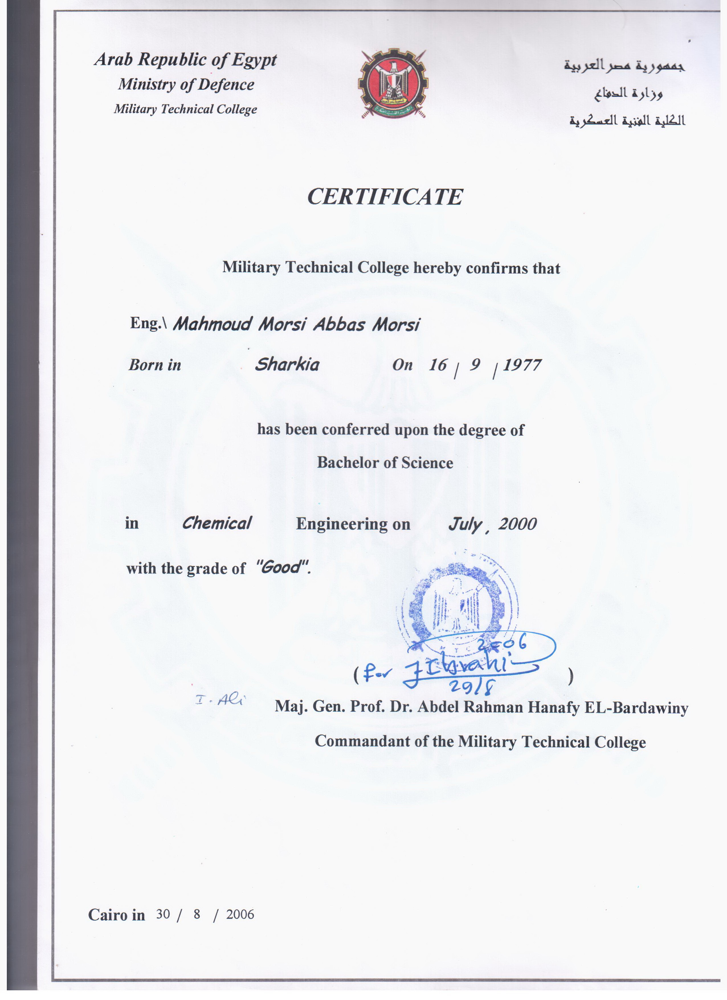
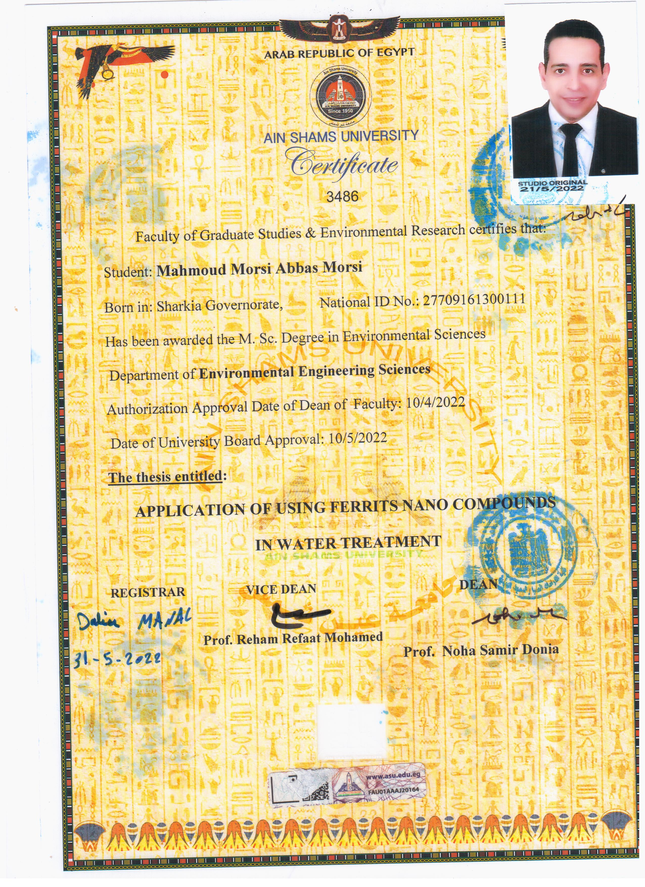
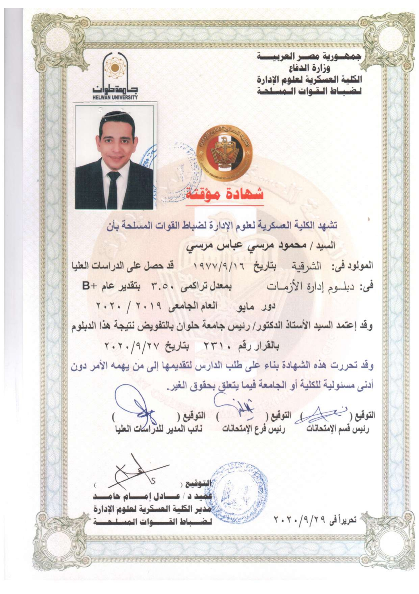
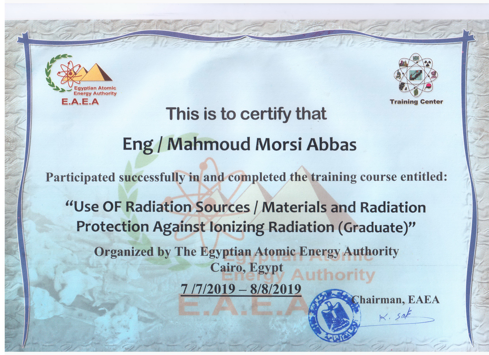
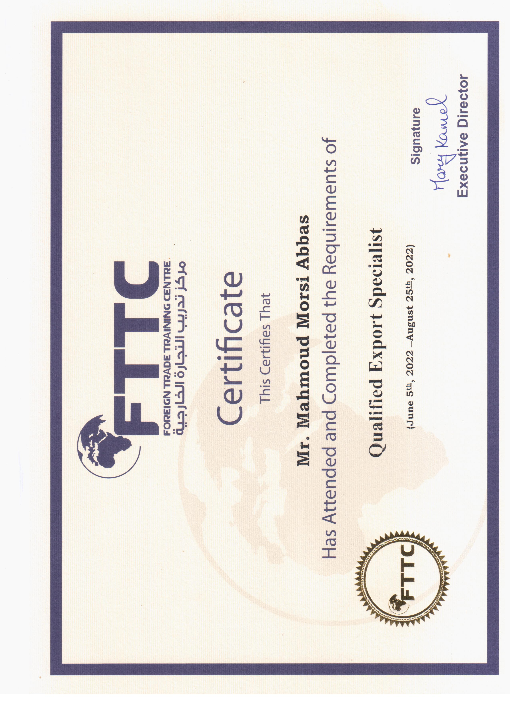
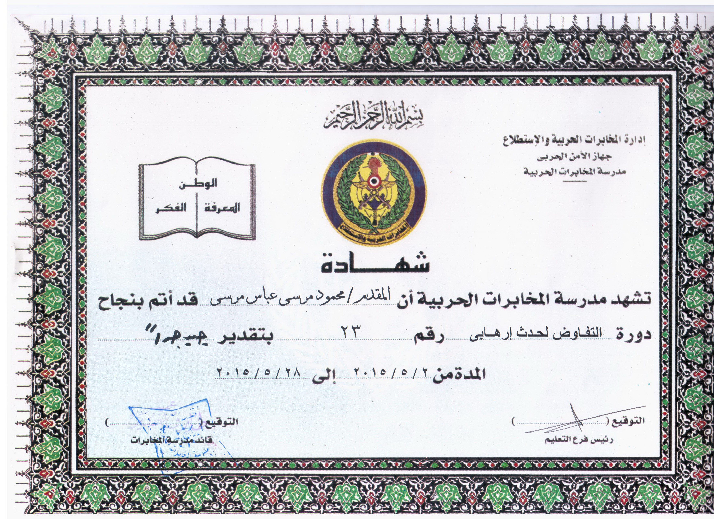
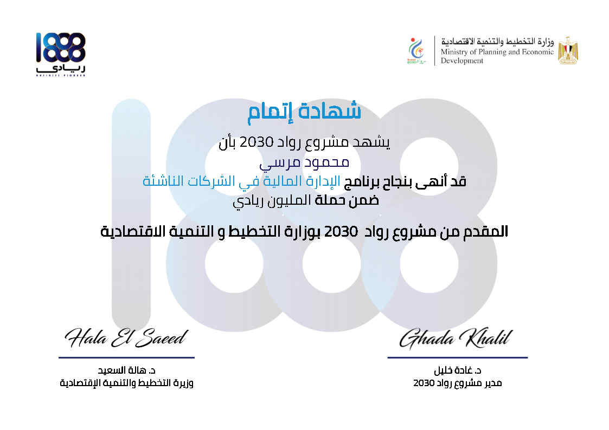
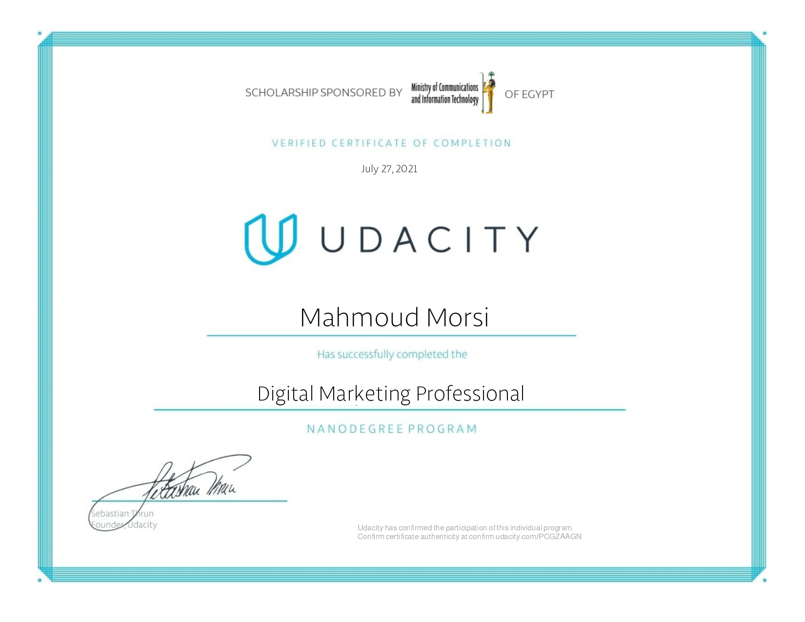
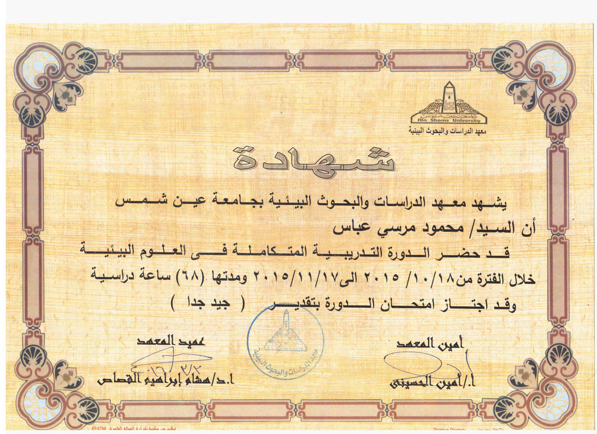
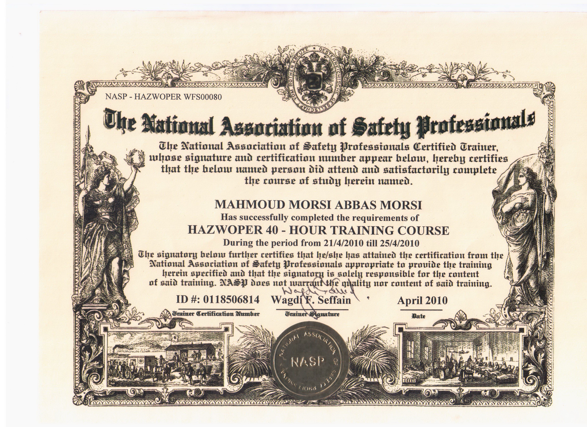
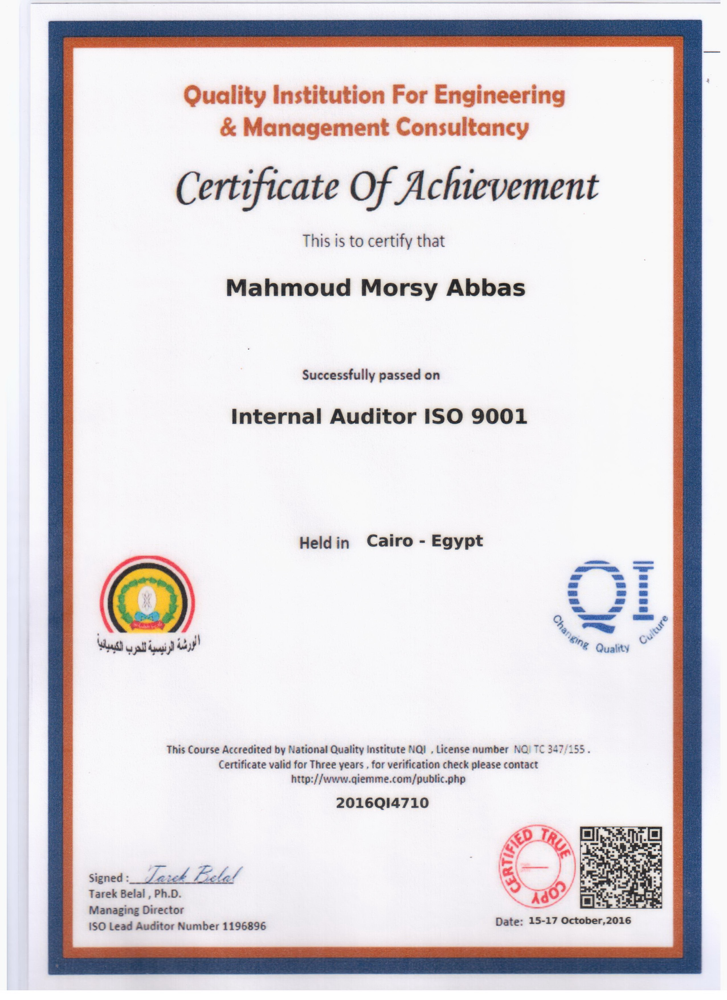
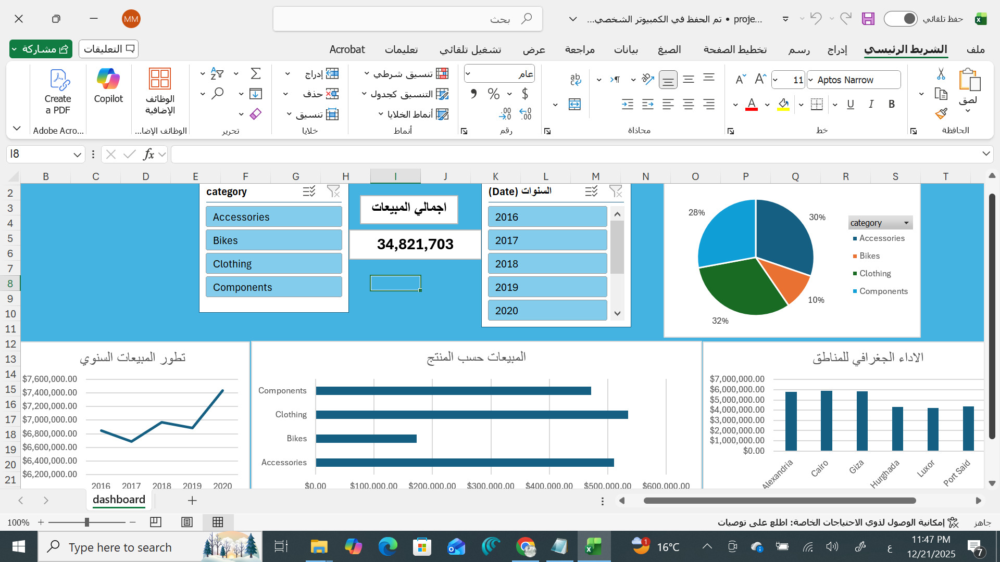
مشروع متكامل باستخدام Excel لتحليل بيانات المبيعات. تم بناء نموذج بيانات (Data Model) لربط الجداول واستخراج مؤشرات الأداء.
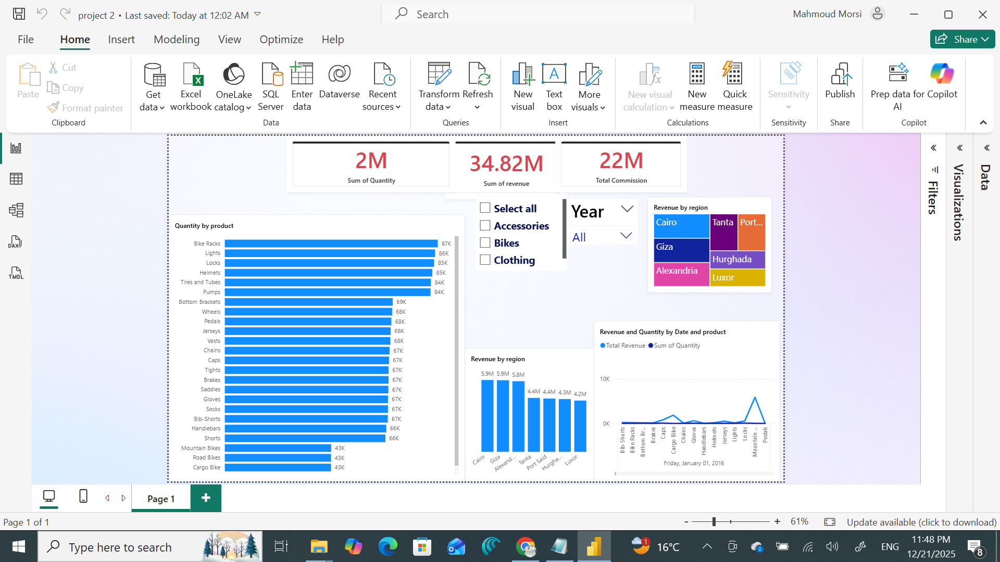
لوحة قيادة تفاعلية باستخدام Power BI لتحليل كفاءة التوريد. تتيح تتبع حركة المنتجات وتحديد نقاط الهدر في الوقت والمخزون.
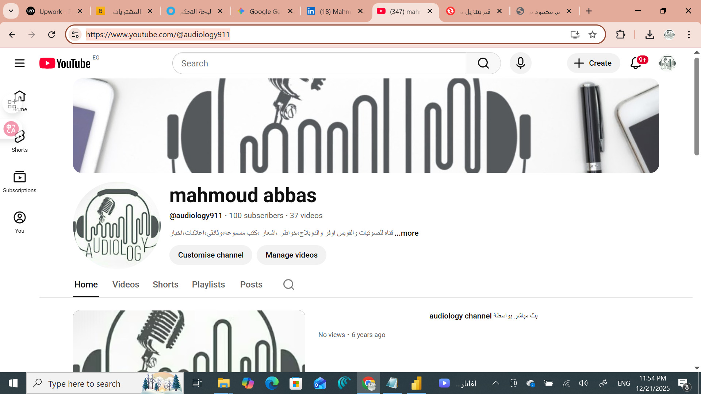
قناة متخصصة في الفنون الصوتية والكتب المسموعة. إدارة وإنتاج محتوى احترافي، واستخدام تحليلات اليوتيوب لفهم الجمهور.